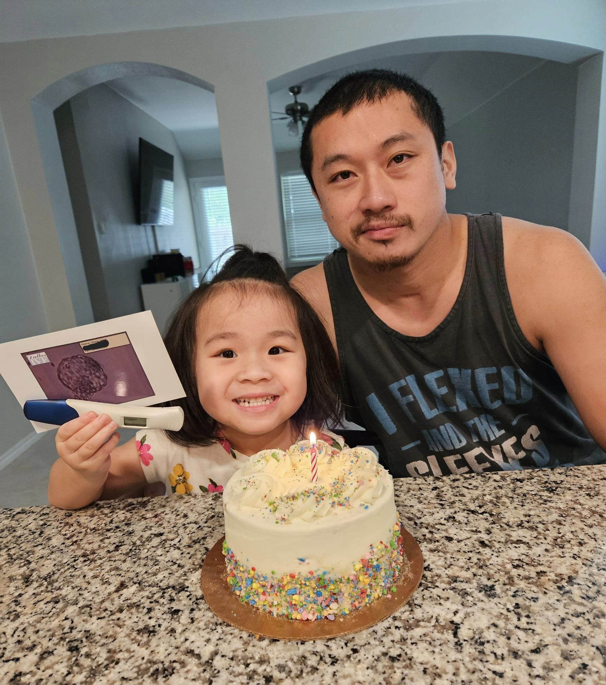

Jim Lee is a resilient individual who has overcome significant challenges in his life. Born and raised in a small town, Jim always had a passion for adventure and outdoor activities. He enjoyed hiking, camping, and exploring nature, finding solace and peace in the great outdoors. However, Jim's life took a drastic turn when he became the victim of a traumatic incident.